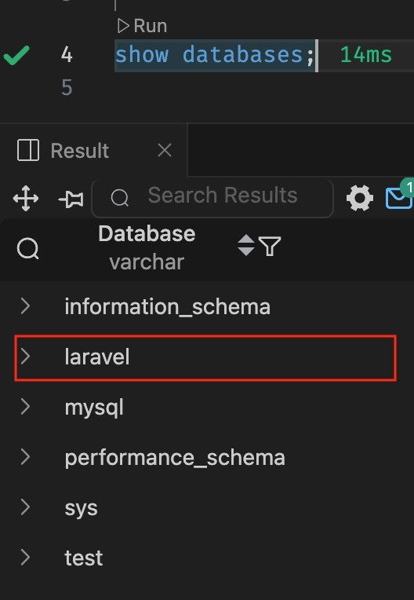
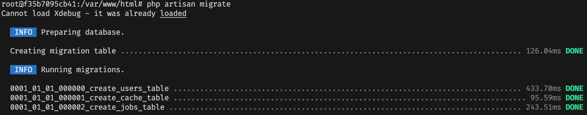
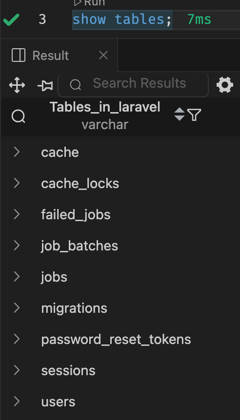
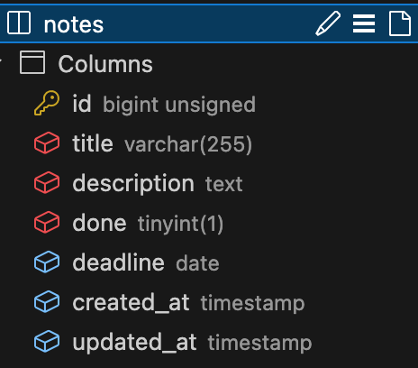
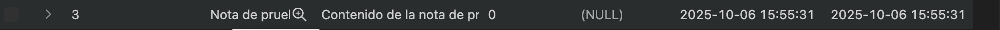

Migraciones y Modelos en Laravel¶
Autoría de este tema
El contenido de este tema (las lecciones, la actividad y los anexos) es obra de Javier Beteta, del curso Introducción a Laravel. Adaptado para 2º DAW del IES Juan de Garay por Eva María Gómez Abad.
Introducción a las Migraciones¶
Las migraciones son una forma de controlar la estructura de la base de datos de tu aplicación a través de archivos PHP versionados. Permiten crear, modificar o eliminar tablas de forma organizada y controlada.
Importante
Las migraciones funcionan como un "control de versiones" para la base de datos, similar a Git pero para el esquema de datos.
Hay que evitar modificar la base de datos directamente. En su lugar, se deben crear migraciones para reflejar los cambios. De esta forma, se mantiene un historial de cambios y se facilita la colaboración entre desarrolladores. Cualquier cambio en la estructura de la base de datos debe ser reflejado en una migración.
Configuración de la Base de Datos en Laravel¶
Laravel utiliza el archivo .env para definir los datos de conexión a la base de datos.
Parámetros principales:
DB_CONNECTION=mysql
DB_HOST=127.0.0.1
DB_PORT=3306
DB_DATABASE=nombre_base_datos
DB_USERNAME=usuario
DB_PASSWORD=contraseña
| Variable | Descripción |
|---|---|
| DB_CONNECTION | Tipo de base de datos (mysql, pgsql, sqlite, etc.) |
| DB_HOST | Dirección del servidor de base de datos |
| DB_PORT | Puerto de conexión a la base de datos |
| DB_DATABASE | Nombre de la base de datos |
| DB_USERNAME | Usuario para conectarse a la base de datos |
| DB_PASSWORD | Contraseña del usuario |
Cada vez que modifiques .env, debes reiniciar los contenedores Docker para aplicar cambios. Este fichero está en la raíz del proyecto y no debe ser compartido públicamente, ya que contiene información sensible. Tampoco se almacena en el repositorio de Git, ya que está en el .gitignore. Para compartir la configuración, se puede crear un archivo .env.example con los parámetros necesarios, pero sin datos sensibles. Este archivo sirve como plantilla para que otros desarrolladores creen su propio .env. De esta manera evitamos compartir información sensible y mantenemos la seguridad del proyecto.
Recuerda, antes de tocar el fichero .env, hacer una copia del mismo como .env.example para que otros desarrolladores puedan usarlo como plantilla. Así, cada uno podrá crear su propio .env con sus credenciales y configuraciones específicas.
Esto crea una copia del archivo .env como .env.example. Este último puede ser compartido en el repositorio, pero no debe contener información sensible. Puedes añadir comentarios en el .env.example para explicar cada parámetro.
Luego, cada desarrollador puede copiar el .env.example a .env y modificarlo según sus necesidades.
Esto crea un nuevo archivo .env basado en el ejemplo. Asegúrate de que el .env no se suba al repositorio, ya que contiene información sensible como contraseñas y claves de API.
Bases de Datos soportadas por Laravel¶
Por defecto, Laravel soporta:
- MySQL / MariaDB
- PostgreSQL
- SQLite
- SQL Server
Consejo
Para proyectos educativos y sencillos, SQLite es muy recomendable por su facilidad de configuración. Es la base de datos que utilizará por defecto.
Para este curso usaremos mysql como base de datos. Si has seguido los temas anteriores ya debes tener acceso a una base de datos MySQL, dentro del docker-compose creado anteriormente. Asegúrate de que los parámetros de conexión en el archivo .env sean los siguientes:
Parámetros de conexión
Asegúrate de que los parámetros de conexión en el archivo .env sean los siguientes:
DB_HOST
Normalmente aquí tendremos la IP del servidor de base de datos. En nuestro caso, como estamos trabajando con contenedores docker dentro de un docker-compose, el valor será mysql, que es el nombre del servicio definido en el docker-compose.yml. En el caso de tener un contenedor independiente, el valor será la IP del contenedor o host.docker.internal si la base de datos está en el mismo host.
Podemos utilizar cualquier herramienta para gestionar la base de datos, como DBeaver, Adminer, MySQL Workbench, etc. En este curso vamos utilizar una extensión de VSCode llamada MySQL de Database Client. Esta extensión permite conectarse a bases de datos MySQL y realizar consultas directamente desde el editor. Esto nos permite no tener que salir de VSCode cuando tengamos que interactuar con las bases de datos.
Creamos la base de datos laravel:
Puedes comprobar SHOW DATABASES; para ver que la base de datos ha sido creada correctamente.
Base de datos creada

Error de permisos
Es probable que al intentar crear la base de datos obtengas un error de permisos.
Access denied for user 'alumno'@'%' to database 'laravel'
Esto es porque al inciciar el contenedor de MySQL, hemos creado un usuario alumno con permisos limitados. Para solucionar este problema, podemos conectarnos a MySQL como root y completar los permisos del usuario alumno. Para ello, ejecuta los siguientes comandos:
GRANT ALL PRIVILEGES ON *.* TO 'alumno'@'%' IDENTIFIED BY 'alumno' WITH GRANT OPTION;
FLUSH PRIVILEGES;
Ahora puedes volver a crear la base de datos Laravel sin problemas.
Migraciones por Defecto en Laravel¶
Ahora que hemos creado la nueva base de datos con la que trabajará laravel, y hemos modificado el fichero .env para que laravel se conecte a la base de datos, vamos a ver las migraciones que vienen por defecto en laravel y que necesitamos ejecutar antes de empezar a trabajar con laravel.
Cuando creamos un proyecto Laravel, ya existen tres migraciones iniciales:
| Migración | Descripción |
|---|---|
create_users_table.php |
Crea la tabla users. |
create_jobs_table.php |
Crea la tabla jobs. |
create_cache_table.php |
Crea la tabla cache. |
Podemos encontrar estas migraciones en la carpeta database/migrations/. Cada archivo tiene un nombre que incluye una marca de tiempo y una descripción de la migración. La marca de tiempo asegura que las migraciones se apliquen en el orden correcto.
Crear una Base de Datos y Ejecutar Migraciones Iniciales¶
Si no lo hiciste anteriormente es el momento de crear la base de datos Laravel en MySQL.
Recuerda que en nuestro entorno para ejecutar comandos de Artisan, debes entrar en el contenedor de PHP. Para ello, ejecuta:
docker compose exec nombre_servicio bash # recomendado
docker exec -it nombre_contenedor_php bash # alternativa
Donde nombre_contenedor_php es el nombre del contenedor PHP que has creado. Puedes encontrarlo con el comando docker ps, y el nombre_servicio es el nombre del servicio PHP en el docker-compose.yml (php).
Para nuestro caso:
Acceder al contenedor PHP
Vamos a comenzar por ejecutar las migraciones por defecto. Para ello, ejecuta el siguiente comando:
Ejecutar migraciones
Ejecuta el siguiente comando para ejecutar las migraciones por defecto:
Esto ejecutará todas las migraciones que aún no se han aplicado. Si todo va bien, deberías ver un mensaje indicando que las migraciones se han ejecutado correctamente. Esto creará las tablas users, jobs y cache en la base de datos laravel. Puedes verificarlo conectándote a la base de datos con tu herramienta preferida y comprobando que las tablas han sido creadas correctamente.
imagen migraciones

Si todo ha ido bien debemos encontrar las siguientes tablas en la base de datos:
Tablas creadas

| Tabla | Descripción |
|---|---|
users |
Tabla de usuarios. |
jobs |
Tabla de trabajos en cola. |
cache |
Tabla de caché. |
cache_locks |
Tabla de bloqueos de caché. |
migrations |
Tabla de migraciones. |
failed_jobs |
Tabla de trabajos fallidos. |
password_resets |
Tabla de restablecimiento de contraseñas. |
personal_access_tokens |
Tabla de tokens de acceso personal. |
sessions |
Tabla de sesiones. |
La mayoría de las tablas son necesarias para el funcionamiento de laravely algunas de ellas las veremos en este curso, otras se quedan fuera ya que el contenido del curso no nos alcanza. De momento nos importa la tabla migrations, donde se irán anotando cada una de las migraciones que se realizan con tal de que laravel pueda llevar un control de las mismas. La estudiamos en profundidad en el punto siguiente,
La tabla migrations¶
Hechemos un vistazo a la tabla migrations para ver cómo funciona. Vamos a ver los campos que tiene:
id: Identificador único de la migración.migration: Nombre de la migración.batch: Número de lote al que pertenece la migración. Este número se incrementa cada vez que se ejecuta una migración. Esto permite agrupar migraciones y revertirlas todas a la vez si es necesario.
Y qué registros tiene:
| id | migration | batch |
|---|---|---|
| 1 | 2023_10_01_000000_create_users_table | 1 |
| 2 | 2023_10_01_000000_create_jobs_table | 1 |
| 3 | 2023_10_01_000000_create_cache_table | 1 |
Aquí podemos ver que las tres migraciones iniciales pertenecen al mismo lote (batch 1). Esto significa que se ejecutaron todas juntas. Si ejecutamos una nueva migración, se creará un nuevo lote (batch 2) y así sucesivamente.
Cada vez que corres php artisan migrate, Laravel revisa esta tabla para decidir qué migraciones necesita aplicar. También sirve para saber qué migraciones ya se han ejecutado y cuáles no. Esto es útil para mantener un control de las migraciones y evitar que se apliquen varias veces. Podemos volver a ejecutar el comando php artisan migrate y ver que no se aplican las migraciones que ya están en la tabla migrations. Esto es porque Laravel revisa esta tabla antes de aplicar las migraciones y solo aplica las que no están en la tabla. El resultado será algo como esto:
Crear una nueva migración¶
Es importante seguir la convención de nombres para las migraciones. El nombre de la migración debe comenzar por la acción (create, update, delete, etc.)y luego el nombre del componente. Esto asegura que las migraciones se apliquen en el orden correcto. Por ejemplo, si creamos una migración para crear una tabla notes, el nombre del fichero será algo como create_notes_table.php. Laravel añadirá automáticamente la marca de tiempo al nombre del fichero. El nombre del fichero será algo como 2025_10_01_000000_create_notes_table.php. Esto asegura que las migraciones se apliquen en el orden correcto. La marca de tiempo es importante porque Laravel utiliza esta información para determinar el orden en que se deben aplicar las migraciones. Si no seguimos esta convención, podríamos tener problemas al aplicar las migraciones.
Fijemonos que el nombre de la entidad que queremos crear está en mínusculas y en plural ...notes....
Para crear una nueva migración primero debemos crear el fichero de migración. Para ello, usamos el comando:
Crear migración
Usa el siguiente comando para crear una nueva migración:
Esto crea el archivo 2025_10_01_000000_create_notes_table.php en database/migrations/:
Creación de componentes laravel
Para crear la mayoría de los componentes de laravel (migraciones, modelos, controladores, etc.) se utiliza el comando php artisan make:componente, donde componente es el tipo de componente que queremos crear. NUNCA debemos crear estos componentes manualmente, ya que laravel nos proporciona una forma rápida y sencilla de crearlos.
Definir la Estructura de una tabla¶
Ahora vamos a analizar el contenido del archivo de migración que acabamos de crear. Este archivo contiene dos métodos: up() y down().
- El método
up()se utiliza para definir la estructura de la tabla que queremos crear - El método
down()se utiliza para revertir los cambios realizados por el métodoup().
Podemos comenzar por observar los useal principio del archivo:
| use | Descripción |
|---|---|
Illuminate\Database\Migrations\Migration |
Clase base para las migraciones. |
Illuminate\Database\Schema\Blueprint |
Clase para definir la estructura de la tabla. |
Illuminate\Support\Facades\Schema |
Clase para interactuar con el esquema de la base de datos. |
Dentro del método up(), defines la estructura de la tabla.
Ejemplo:
Definir estructura de tabla
Campos especiales:
| Campo | Descripción |
|---|---|
| ìd() | Crea una clave primaria autoincremental. |
| timestamps() | Crea los campos created_at y updated_at automáticamente. |
Tipos comunes de campos:
| Tipo | Descripción | Parámetros |
|---|---|---|
string |
Cadena de texto. | Parámetros: (nombre, longitud). Longitud opcional, por defecto 255. El valor de longitud debe estar entre 0 y 255. |
text |
Texto largo. | Parámetros: (nombre, longitud). Longitud opcional, por defecto 65535. El valor de longitud debe estar entre 0 y 65535. |
integer |
Número entero. | Parámetros: (nombre, longitud). Longitud opcional, por defecto 11. El valor de longitud debe estar entre -2147483648 y 2147483647. |
boolean |
Valor booleano. | Parámetros: (nombre). No requiere longitud. Los valores posibles son 0 o 1. |
date |
Fecha. | Parámetros: (nombre). No requiere longitud. Formato por defecto: YYYY-MM-DD. |
enum |
Enum, para definir un conjunto de valores posibles. | Parámetros: (nombre, longitud). Longitud opcional, por defecto 255. El valor de longitud debe estar entre 0 y 255. |
float |
Número de punto flotante. | Parámetros: (nombre, precisión). Precisión opcional, por defecto 8. La precisión determina el número total de dígitos. |
double |
Número de punto flotante de doble precisión. | Parámetros: (nombre, precisión). Precisión opcional, por defecto 8. La precisión determina el número total de dígitos. |
decimal |
Número decimal. | Parámetros: (nombre, precisión, escala). La precisión es el número total de dígitos, y la escala es el número de dígitos a la derecha del punto decimal. |
json |
Campo para almacenar datos en formato JSON. | Parámetros: (nombre, longitud). Longitud opcional, por defecto 65535. El valor de longitud debe estar entre 0 y 65535. |
Modificadores de Campos¶
| Modificador | Descripción |
|---|---|
nullable() |
Permite que el campo sea nulo. |
default(value) |
Establece un valor por defecto. |
unique() |
Establece el campo como único. |
index() |
Crea un índice para el campo. |
foreign() |
Define una clave foránea. |
unsigned() |
Establece el campo como sin signo. |
after(column) |
Coloca el campo después de otro campo. |
before(column) |
Coloca el campo antes de otro campo. |
primary() |
Establece el campo como clave primaria. |
Los modificadores se pueden combinar. Por ejemplo:
Esto crea un campo title de tipo string con una longitud máxima de 255 caracteres, que no puede ser nulo y debe ser único en la tabla.
Ejemplo Práctico: Crear Tabla notes¶
Creamos la tabla notes con los campos:
- id
- title
- description
- done
- created_at y updated_at (timestamps)
Usando el código mostrado en el apartado anterior.
Una vez tengamos el fichero de migración creado, podemos ejecutarlo con el siguiente comando:
Esto ejecutará la migración y creará la tabla notes en la base de datos. Puedes verificarlo conectándote a la base de datos con tu herramienta preferida y comprobando que la tabla ha sido creada correctamente.
Cómo Eliminar una Migración (función down())¶
Si en un momento queremos eliminar la tabla notes, podemos hacerlo en el método down() de la migración. No debes eliminar la tabla directamente desde la base de datos, ya que esto no actualizará la tabla migrations y podrías tener problemas al aplicar o revertir migraciones en el futuro.
Primero implementamos el método down() en la migración. Si creamos el fichero siguiendo la convención de nombres, el método down() debería verse así:
Probamos los comandos
Ahora, ejecutamos los siguientes comandos:
Modificar una Tabla Existente¶
Supongamos que queremos añadir un campo deadline:
Pasos para modificar una tabla
Pasos para modificar una tabla existente:
- Ejecutar rollback:
- Modificar la migración anterior agregando:
- Ejecutar de nuevo:
tabla notes

Buena práctica
Nunca debes modificar directamente las tablas en producción. Es mejor crear una nueva migración para alterar la tabla.
5.6.12 Comandos de Migraciones¶
| Comando | Descripción |
|---|---|
php artisan migrate |
Ejecuta migraciones pendientes. |
php artisan migrate:rollback |
Deshace la última migración ejecutada. |
php artisan migrate:reset |
Revierte todas las migraciones. |
php artisan migrate:refresh |
Resetea y vuelve a ejecutar todas las migraciones. |
php artisan migrate:fresh |
Borra todas las tablas y ejecuta todas las migraciones. |
Parámetros comunes:
php artisan migrate:rollback --step=Npara revertir N migraciones.php artisan migrate --batch=Npara ejecutar migraciones de un lote específico.php artisan migrate --path=/ruta/a/migracionpara ejecutar una migración específica.php artisan migrate --pretendpara simular la ejecución de migraciones sin aplicarlas.
Crear una Migración para actualizar una tabla¶
En el ejemplo anterior hemos modificado una tabla añadiendo un campo deadline. Pero lo hemos hecho modificando la migración original. Pero esto no siempre es posible y por tanto no es una buena práctica. Imaginemos por un momento que la tabla notes ya está en producción y tiene datos. Si modificamos la migración original y ejecutamos php artisan migrate:refresh, perderemos todos los datos de la tabla. Por tanto, lo correcto es crear una nueva migración para modificar la tabla.
Eliminar y volver a crear la tabla
El truco de borrar la tabla y volver a crearla solo es válido en entornos de desarrollo, nunca en producción. Cuando eliminamos la tabla y la volvemos a crear, perdemos todos los datos que había en la tabla. Esto no es aceptable en un entorno de producción, ya que los datos son valiosos y no se pueden perder. En un entorno de desarrollo, esto puede ser aceptable si estamos probando cosas y no nos importa perder los datos. Pero en producción, esto es inaceptable y debemos crear una nueva migración para modificar la tabla sin perder los datos.
En este punto vamos a crear una nueva migración para añadir un campo author a la tabla notes. El campo será de tipo string y podrá ser nulo. Y En este caso vamos a modificar la tabla sin necesidad de hacer rollback, ya que la tabla notes ya está creada y tiene datos.
Puedes poblar la tabla notes con algunos datos de prueba si quieres comprobar que los datos no se pierden al ejecutar la migración.
Creamos una nueva migración:
Crear migración para actualizar tabla
Usa el siguiente comando para crear una nueva migración para actualizar la tabla notes:
En el método up():
<?php
Schema::table('notes', function (Blueprint $table) {
$table->string('author')->after('description')->nullable();
});
En el down():
Para ejecutar la migración:
Puedes comprobar que existe un nuevo campo author en la tabla notes. Y que está en la posición correcta.
Para deshacer la migración, ejecuta:
Deshacer migración
Ejecuta el siguiente comando para deshacer la migración:
Esto revertirá la migración y eliminará el campo author de la tabla notes. Puedes verificarlo conectándote a la base de datos y comprobando que el campo ha sido eliminado correctamente.
Introducción a los Modelos en Laravel¶
Los modelos son una parte fundamental de Laravel y nos permiten trabajar con la base de datos de forma más ágil. Cada modelo representa una tabla en la base de datos y nos permite interactuar con ella de forma sencilla mediante Eloquent ORM. Esto significa que podemos realizar operaciones CRUD (Crear, Leer, Actualizar, Eliminar) en la base de datos sin necesidad de escribir consultas SQL complejas. Los ficheros se encuentran en la carpeta app/Models. Por defecto, Laravel crea un modelo para cada tabla en la base de datos. Sin embargo, también podemos crear modelos personalizados para tablas específicas o para representar relaciones entre tablas.
Carpeta app/Models¶
Aquí se almacenan todos los modelos de la aplicación.
Por convenciones:
- El modelo
Noterepresenta la tablanotes. - El modelo
Userrepresenta la tablausers.
Los modelos deben seguir la convención de nombres de Laravel. Por ejemplo, el modelo Note debe estar en un archivo llamado Note.php y debe estar en la carpeta app/Models. El nombre del modelo debe ser singular, mientras que el nombre de la tabla debe ser plural. Esto es importante porque Laravel utiliza esta convención para relacionar los modelos con las tablas de la base de datos.
Crear un Modelo para la Tabla notes¶
Usamos el comando:
Esto crea app/Models/Note.php.
Contenido del modelo
El modelo Note extiende la clase Model, que es la clase base para todos los modelos en Laravel. Esto nos permite utilizar todas las funcionalidades de Eloquent ORM en nuestro modelo Note. La clase Model proporciona métodos para interactuar con la base de datos, como save(), delete(), find(), entre otros.
Asociar el Modelo a una tabla personalizada¶
Si hemos seguido las convenciones de Laravel, el modelo Note se asociará automáticamente a la tabla notes. Sin embargo, si la tabla tiene un nombre diferente, debemos especificarlo en el modelo. Por ejemplo, si la tabla se llama app_notas, el modelo debe verse así:
<?php
namespace App\Models;
use Illuminate\Database\Eloquent\Model;
class Note extends Model
{
// Especificar el nombre de la tabla
protected $table = 'app_notas';
}
Crear una nueva Nota con Eloquent¶
Este sería el código para crear una nueva nota:
<?php
$note = new Note();
$note->title = 'Mi primer nota';
$note->description = 'Descripción de la nota';
$note->done = false;
$note->save();
Podemos observar que no hemos utilizado sql, estamos utilizando la clase Model de Laravel para interactuar con la base de datos. Esto es posible gracias a Eloquent ORM, que nos permite trabajar con la base de datos de forma más sencilla y rápida. Si analizamos el use podemos ver:
Esto significa que estamos utlizando Eloquent, que es el ORM de Laravel. Eloquent nos permite interactuar con la base de datos de forma más sencilla y rápida, utilizando objetos en lugar de consultas SQL. Esto hace que el código sea más legible y fácil de mantener.
Lo iremos ampliando durante el curso, pero por ahora es suficiente.
Puedes probar a crear una nota y eliminarla:
Pero la antes, ¿Dónde ponemos este código?, si aún no hemos visto los controladores. Hay varias opciones:
- Puedes crear un carchivo php y ejecutarlo desde la línea de comandos.
- Puedes crear una ruta temporal en
routes/web.phpy ejecutar el código desde ahí.
Vamos a tomar la segunda opción, por tanto iremos a routes/web.php y añadimos la siguiente ruta:
Ruta temporal para crear una nota
Ahora, si accedemos a http://localhost:8080/crear-nota, se ejecutará el código y se creará una nueva nota en la base de datos. Puedes verificarlo conectándote a la base de datos y comprobando que la nota ha sido creada correctamente.
Nota creada

Ahora podemos eliminar la nota creada. Para ello, añadimos otra ruta temporal en routes/web.php:
Ruta temporal para eliminar una nota
<?php
use App\Models\Note;
Route::get('/eliminar-nota', function () {
$note = Note::first(); // Suponiendo que es la primera nota creada
/** $note = Note::find(3); Si queremos acceder a un ID concreto */
if ($note) {
$note->delete();
return 'Nota eliminada con éxito';
}
return 'No hay notas para eliminar';
});
Ahora, si accedemos a http://localhost:8080/eliminar-nota, se ejecutará el código y se eliminará la nota con ID 3 de la base de datos. Puedes verificarlo conectándote a la base de datos y comprobando que la nota ha sido eliminada correctamente.
Propiedades importantes en Modelos¶
Una vez hemos creado el modelo, podemos utilizar algunas propiedades importantes para definir su comportamiento. Estas propiedades nos permiten personalizar el modelo y adaptarlo a nuestras necesidades. Con estas propiedades podemos definir qué campos se pueden asignar masivamente, qué campos se deben ocultar en las respuestas JSON, y cómo se deben convertir los tipos de datos.
| Propiedad | Descripción |
|---|---|
$fillable |
Lista de campos que pueden ser asignados masivamente. |
$guarded |
Lista de campos que no pueden ser asignados. |
$casts |
Convierte automáticamente tipos de campos (ej: booleanos, fechas). |
$hidden |
Campos que no se deben mostrar en JSON. |
Por ejemplo en nuestra tabla notes podemos definir los campos que se pueden asignar masivamente:
<?php
protected $fillable = ['title', 'description', 'done', 'deadline'];
protected $hidden = ['created_at', 'updated_at'];
protected $casts = [
'done' => 'boolean',
'deadline' => 'date',
];
protected $guarded = ['id'];
Esto significa que los campos title, description, done y deadline pueden ser asignados masivamente, mientras que el campo id no puede ser asignado. Además, los campos created_at y updated_at no se mostrarán en las respuestas JSON. El campo done se convertirá automáticamente a un booleano y el campo deadline se convertirá automáticamente a una fecha.
Esto es útil para proteger los campos que no queremos que sean modificados directamente, como el campo id. De esta manera los campos no pueden ser modificados directamente, sino que deben ser asignados a través de los métodos del modelo. Esto ayuda a mantener la integridad de los datos y evita errores al modificar los campos.
La propiedad $casts nos permite definir cómo se deben convertir los tipos de datos. Por ejemplo, si tenemos un campo fecha que es un date, podemos definirlo así:
Esto significa que el campo fecha se convertirá automáticamente a un objeto Carbon, que es una biblioteca de PHP para trabajar con fechas y horas. Esto nos permite trabajar con fechas de forma más sencilla y rápida, utilizando métodos como format(), addDays(), entre otros.
Si la clave primaria no es id, podemos especificar el nombre de la clave primaria:
Esto es útil si estamos utilizando una clave primaria diferente a la convencional. Por ejemplo, si estamos utilizando una clave primaria compuesta o si estamos utilizando un campo diferente como clave primaria. En este caso, debemos especificar el nombre de la clave primaria en el modelo para que Laravel pueda identificarla correctamente.
Un ejemplo de clave compuesta sería:
Relación entre Modelos y Migraciones¶
- Cada modelo representa una tabla.
- Cada migración modifica la estructura de una tabla.
- Puedes crear modelo y migración a la vez:
Para comprobarlo vamos a crear un nuevo modelo new Note y su migración correspondiente:
Crear modelo y migración
Usa el siguiente comando para crear un nuevo modelo y su migración correspondiente:
Debemos obtener una salida similar a esta:
root@f35b7095cb41:/var/www/html# php artisan make:model NewNote -m
INFO Model [app/Models/NewNote.php] created successfully.
INFO Migration [database/migrations/2025_10_06_160944_create_new_notes_table.php] created successfully.
Esto creará el modelo NewNote y la migración correspondiente para crear la tabla new_notes. Puedes verificarlo en la carpeta app/Models y en la carpeta database/migrations. Esto es útil para crear un nuevo modelo y su migración correspondiente de forma rápida y sencilla. Recuerda que si ya existe el modelo o la migración, Laravel te mostrará un error indicando que ya existe. Esto es útil para crear un nuevo modelo y su migración correspondiente de forma rápida y sencilla. Recuerda que si ya existe el modelo o la migración, Laravel te mostrará un error indicando que ya existe.
camel-case
Fíjate que el nombre del modelo está en CamelCase y el nombre de la tabla está en snake_case y en plural. Esto es importante porque Laravel utiliza estas convenciones para relacionar los modelos con las tablas de la base de datos.
Importante
No siempre que creamos una migración creamos un modelo, pero siempre que trabajamos con un modelo debemos tener su tabla correspondiente.